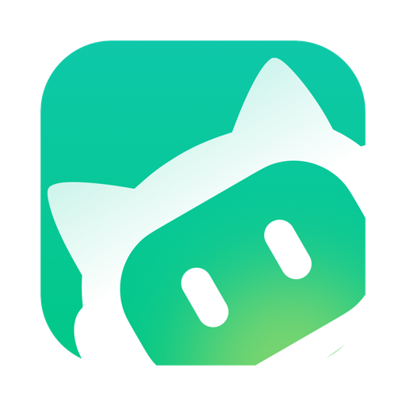

账号管理
统一管理 WorkBuddy、CodeBuddy（IDE / CLI / VS Code / JetBrains）、Trae、Qoder、ZCode、MiniMax、豆包、华为云 CodeArts、DSH、MonkeyCode、OpenCode Zen 等平台账号、积分与签到状态。



近 7 天 Token
—积分构成
—快捷操作
最近事件
| 时间 | 类型 | 详情 |
|---|
添加与迁移账号
快速接入新账号，或从已有环境恢复
› CodeBuddy CLI 接入
Windows 使用 CodeBuddy settings.json 中的认证 Token。保活刷新只更新后续启动使用的 Token；切换账号会先关闭正在运行的 CodeBuddy CLI，重新打开 CLI 后即用新账号。
账号 0
| 账号 | 状态 | 积分 / 已用 | 过期 | 来源 | 操作 |
|---|
账号切换
写回 CodeBuddy 授权文件（自动备份）会话组
关联会话
| 会话 | 客户端 | 模型 | 工作目录 | 最后事件 | 时间 |
|---|
Token 统计
| 日期 | 输入 | 输出 | 缓存读 | 总 Token | 调用 |
|---|
免费额度
这页是记账本：告诉你每个平台还剩多少免费额度 / 积分，好决定这活派给谁。三个动作：①某张卡右上点「抓取」拉到最新数字（WorkBuddy 是本地读、其它平台要联网）②「刷新全部」一次全拉 ③想用某家的额度，就去「上游管理」把它加成上游，填好 Key 后网关就能走它。
抓不到是正常的：没登 Trae 插件、没填某家 Key、或那家没开放额度接口，都会显示「需…」——按提示去补，不是坏了。
免费模型目录
35 家 / 410 个模型，每家的速率限制和月度预算都是实数，不是估的（来自 freellmapi 的免费目录）。看到合适的点「加为上游」，地址和协议自动填好，你只补一个 Key 就能用。
「官方直营」额度小但可长期依赖；「聚合站」额度宽松，但是第三方中转，稳定性和数据合规要你自己掂量——别把重要 Key 挂上去。
点卡片上的「抓取」查看实时额度。
自动更新
本应用 + 各内核 / 组件更新代理
GitHub 不通时填代理，留空直连使用说明 · 全功能教程
先看这里
每一页在右上角都有一个「怎么用」按钮，点它会直接跳到本文对应章节。
整体顺序建议：添加账号 → 配上游 → 接客户端 → 用起来 → 看统计。看不懂哪页就先搜功能名。
便携版预置配置
直接读便携版 config.json用量
| 时间 | 账号 | 上游 | 模型 | Prompt | Completion | 成本 |
|---|
积分明细
| 账号 / 日期 | 消耗积分 | 说明 |
|---|
数据来自 data/state.json 的累计值。上游没有开放「按日积分消耗」接口，
所以大多数情况这里显示的是每个账号的累计已用（总额 − 剩余），不是每天明细——
要看按日用量请去「Token 统计」。
积分构成
按账号汇总成长任务队列
「一键完成」会把这批任务一次性提交给上游；上游对这类批量操作有软限流， 点了没反应或提示 429 就是被限了——本应用会自动退避重试 3 次（约 26 秒），仍失败请等 5~10 分钟。 任务多的时候更稳的做法是隔几分钟分几次点。
| 任务 | 进度 | 奖励 | 状态 |
|---|
积分任务
| 任务 | 进度 | 奖励 | 状态 | 操作 |
|---|
签到中心
原生直连 copilot.tencent.com选择账号后点「立即签到」；原生实现，不启动 exe。
模型与档位
按平台分组。WorkBuddy / CodeBuddy 走面板实时目录，思考档位按模型单独设（下拉里只列该模型支持的档位，改完即存）；其它平台点各卡片「刷新」按 /models 拉取。
在这里直接调用各平台的画图 / 生成视频接口，不用自己拼请求。前提是「上游管理」里那家平台填了 Key，而且它本身提供图像或视频接口——不是每家都有。
本地网关 API
启动后，任何支持 OpenAI 的客户端（Cherry Studio / Cline / 自己写的脚本）把地址填成下面这个，就能画图和生成视频，不用改它的代码：http://127.0.0.1:7864/v1。请求里可加 "upstream":"z_ai" 指定用哪家；不加就用第一个填了 Key 的上游。
POST /v1/chat/completions OpenAI 兼容；stream:true 为真·逐字流式POST /v1/images/generations { prompt, size, model?, upstream? }POST /v1/images/edits 同上，多给 image（base64 或 data URL）POST /v1/videos { prompt, image?, model?, upstream? }GET /v1/videos/{id}?upstream=<id>&zhipu=0|1GET /health流式是真的逐字出：上游吐一个 token 就转发一个，首字延迟＝上游首字时间，不是等整段生成完再切帧。上游是 Anthropic / Gemini 协议会自动翻成 OpenAI 的 SSE 格式，客户端不用改。只有上游连续 90 秒没有任何新内容才会断开。
无窗口常驻：命令行跑 阿晓网关助手.exe --serve-only --port 7864 只起服务不开窗口，适合开机自启或放服务器上；日志在「运行日志 → 网关服务日志」。
相同请求 10 分钟内直接复用上一次的回答，省 token 也省时间。为了不帮倒忙，温度 > 0、带工具、n > 1、流式这四种请求不缓存——那些本来就该每次不一样。缓存只在内存里，关掉应用就没了。
要把网关给别人用，先在这儿生成 Key——每个 Key 可以起名字、设每日次数上限，用完能随时停掉。没生成 Key 时接口是全开的（本机任何程序、包括浏览器网页都能调），只给自己用没问题，要分享就一定要先设。
curl -X POST http://127.0.0.1:7864/v1/images/generations ^
-H "content-type: application/json" ^
-d "{\"prompt\":\"一只戴红头巾的奶牛，商业海报风\",\"size\":\"1024x1024\"}"
创作
支持情况：图像走 OpenAI 兼容的 /images/generations（图生图用 /images/edits）——OpenAI、智谱 CogView、硅基流动等都可以；视频智谱走 /videos/generations + 异步轮询，OpenAI 走 /videos。没有该接口的平台会提示 404，换一家即可。
上游管理
更多免费厂商
来自 FreeLLMAPI 目录，只保留有对话接口的（搜索 / 抓取 / 语音类已剔除）。 多数要各自控制台建 Key；ModelScope（魔搭）国内可直连，值得先试。
同一平台多把 Key：点某行的「再加一条」，复制平台与地址后填新 Key 保存即可。 多条会按权重轮着用（权重越大分到越多）；某条失败时自动切到下一条，不会整体报错。 WorkBuddy 那种多账号不用在这加——去「账号管理」加账号，网关会一起轮。
| ID | 名称 | Base URL | 协议 | 权重 | 健康度 | 状态 | 操作 |
|---|
支持 WorkBuddy / CodeBuddy / Trae / ZCode / Qoder 等上游；协议 openai / responses / anthropic。
接入信息
网关密钥用于「客户端 → 网关」；各平台自己的 Key 在「上游管理」里单独设置。
模型映射
客户端写的模型名 → 上游实际认的名字，一行一条，格式 客户端名=上游模型。
例：gpt-4o=ep-20250101-abc123（火山方舟）、gpt-4o=doubao-pro-32k。
不填就用客户端原样传的名字。
协议与路由
POST /v1/chat/completionsPOST /v1/responsesPOST /v1/messages权重优先 + 会话粘性 + 429/5xx 冷却 60s配额感知（credits）+ 权重对话测试
真实发一次请求，验证上游 Key 是否可用选一个上游，点「发送测试」。这里能看到状态码和返回内容。
成本账本
| 时间 | 上游 | 模型 | Prompt | Completion | 成本 |
|---|
定时任务
请求日志
记录的是经本网关转发的请求（在「协议与路由 → 对话测试」或客户端指向 127.0.0.1:7863 时产生）。客户端直连官方不会出现在这里。
| 时间 | 账号 | 上游 | 模型 | Prompt | Completion |
|---|
网关服务日志
本地 API（127.0.0.1:7864）每收到一个请求、每次选上游、每一轮流式转发都记在这里。客户端报错但看不出原因时先看这里：一条都没有＝请求根本没到网关（客户端地址填错了）；出现 401＝Key 不对；出现 上游 5xx＝对方服务或网络不通。
| 时间 | 级别 | 内容 |
|---|
操作事件
记录的是你在这个应用里做过的操作（切号、签到、测试、保存等），跟上面的服务日志不是一回事：上面记「网关收到了什么」，这里记「你点了什么」。
| 时间 | 类型 | 详情 |
|---|
钩子
| 时间 | 类型 | 详情 |
|---|
这里改的是便携版网关的 config.json，改完要点最下面的「保存配置」，改监听地址 / 密钥这类需要重启网关才生效。拿不准的别动——出厂值已经能正常跑，每项下面都写了它管什么、建议填多少。
服务
127.0.0.1:7863 只本机能用；要让手机或别人连，改成 0.0.0.0:7863（先把密钥换掉）定时任务
小时/分钟，逗号分隔9,21 = 早 9 点 + 晚 9 点9,21账号池与流量治理
600s2h30m6h10m2h0.5 = 每 2 小时涨 130m168h = 7 天30m上游与高级
passthrough 原样转发客户端的提示词；default 用下面文件里的提示词覆盖
日志
本地密钥与授权文件
「统一账号 JSON」= 一份能把账号列表 + 客户端规则整体搬走的文件。三个常见用法：换电脑（旧机导出 → 新机导入）、备份（导出一份存着）、给同事（导出时勾「含明文凭证」，他导入就能直接用）。
① 导入（把账号搬进来）
不会删掉你现有的其它账号两种给法任选一个：方式一点「选择文件」挑一个 .json；方式二把 JSON 内容粘到下面框里。两种都认——本应用导出的格式、便携版面板导出的 cockpit JSON 都能吞。点「导入合并」之后：同 ID 的账号会被更新，新账号追加进来，你原有的其它账号一条都不会少。
② 导出（把账号搬出去）
生成后可复制，也可直接存成文件先决定要不要勾 含明文凭证：不勾 = 只有账号名、积分这类信息，拿到的人还得自己重新登录；勾上 = 连 token 一起导出，别人导入后立刻能用（等于把你的账号给了对方，别传网盘 / 群）。然后点「生成」，下面框里就会出内容；要文件就点「另存为文件」。
运行组件
三态含义：就绪=正在跑或用到了；已内置=这项能力已经做进本应用， 外部 exe 没有也不影响（不用去找那个文件）；未安装=可选组件，装了才有。
已下载的开源仓库（14）
fusion/vendor| 仓库 | 语言 | 体积 | 能力 |
|---|
支持工具
检测本机安装状态| 工具 | 状态 | 路径 | 说明 | 启用 |
|---|
自动设置
CodeBuddy CLI 自动轮换
本机
浅色关闭7863（由内置内核使用）Windows 凭据管理器更新日志
每次改动都记在这里。升级后不知道变了什么，就看这一页——它随 exe 一起打包，不联网也能看。
扩展能力
每张卡下面都写了「这是干啥的、怎么用」移动端常驻
网关默认只听 127.0.0.1，手机连不上。点「开放局域网」后，同一 WiFi 下的手机 / 平板就能打开面板和接口；上面会显示可以直接输进手机的地址。注意：开放后同网段谁都能访问，先把 config.json 里的 api_key 改成自己的随机串再开；公网使用请走反向代理 + HTTPS。
控制面
把网关「分给别人用」时才需要。分发的 Key：填进去之后，客户端必须带其中一个 Key 才调得动（不带或不匹配直接拒），每行一个；白名单：填模型名片段，只放行匹配的模型（例如 claude gpt-4o），每行一个。两个框都留空 = 不限制，自己本机用保持空着就行。
极简 CLI 会话复用
本机已经装过并登录过 CodeBuddy CLI？点「导入为账号」会把它的登录态直接读进账号池，不用再扫码登录一遍。前提是下面「CLI 配置」那一行有路径；显示「未接入」说明没装或没登录过。
客户端配置导出
一键写进各客户端的配置文件把「网关地址 + 密钥」自动写进对应客户端的配置文件，点一下就好，不用手抄：Claude Code → ~/.claude；Codex → ~/.codex；DSH → ~/.dsh；通用 JSON 给你手动粘到别处。写完重启客户端生效。不知道选哪个就点「通用 JSON」，先把地址复制出来。
上下文压缩
对话太长时上游会按整段计费。勾上「启用压缩」后，转发前只保留 system + 最近 6 条，单条超过「上限」字符会被截断，能明显省 token。代价是会丢早期上下文，需要 AI 记住前面内容时别开。默认关闭，改了记得点保存。
官方 API + MCP
「添加常用 6 家」会把 OpenAI / Gemini / DeepSeek 这些一键加成上游，然后一定要去「上游管理」逐个填各自的 Key，不然调用会 401。下面那段 JSON 是 MCP 配置：复制到 Claude Code / Codex 的 mcpServers 里，AI 就能直接调这个网关。不用 MCP 的话忽略它。
ZCode off-peak 队列
用来把不着急的请求排到半价时段跑。窗口默认 00:00-08:00，队列里任务会在窗口内自动执行。点「加入测试任务」只是往队列塞一条试试，用来确认队列能动；真实任务由网关按窗口排队。不想用了把队列清空即可。
10 上游 + 思考档位
思考档位决定模型「想多久」：low 快但浅，high/max 深但慢且费。优先级：模型级（去「模型与档位」页按模型设）> 这里的上游级 > 默认。拿不准就选 default——它表示完全不改请求体，把客户端的原始参数原样转发，最安全。
能力覆盖
按全景清单「能力矩阵」逐项核对| 能力 | 来源 | 状态 |
|---|
关于 / 更新
阿晓网关助手0.1.0Tauri v2 · Rust + WebView2网关便携版 + 全景清单 + workbuddy-switch + 签到助手fusion/vendor · 14 个